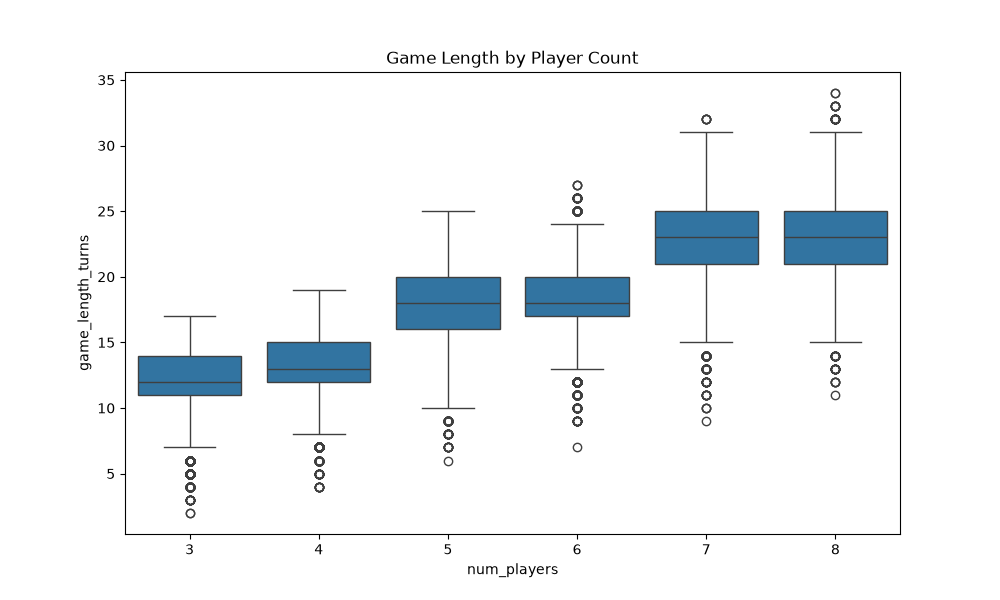
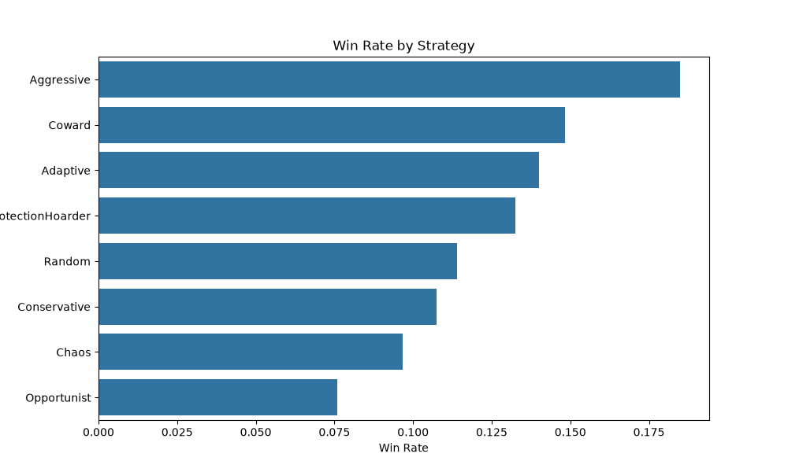
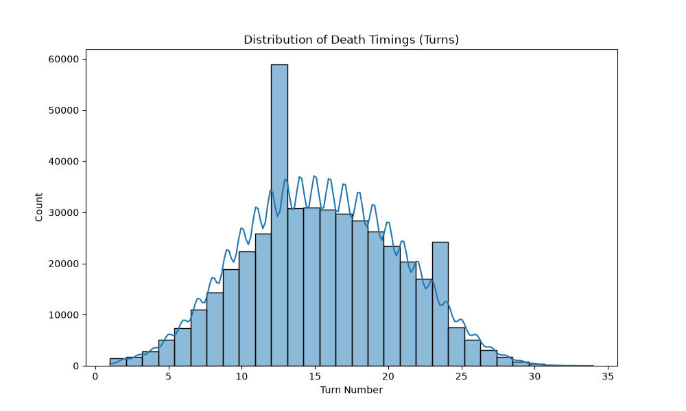
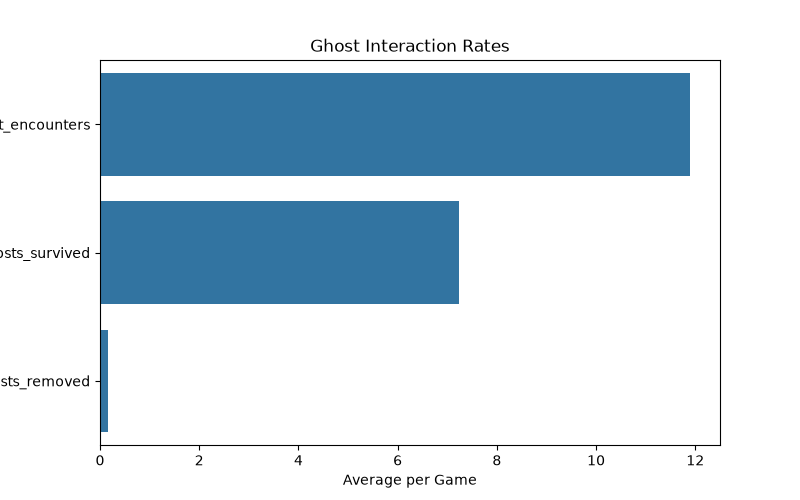
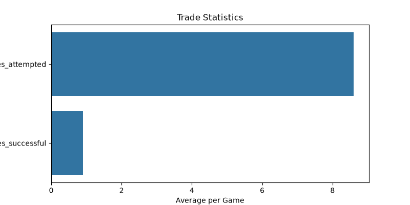
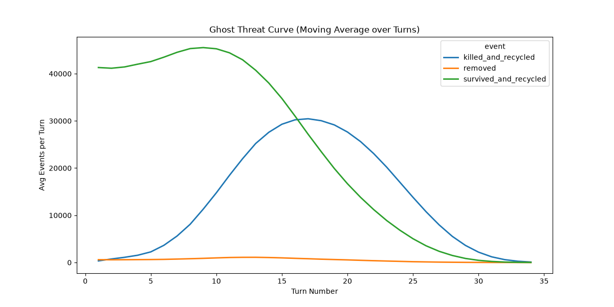

Save Your Neck Simulation Report
Generated based on 100000 simulated games.
Strategy Behaviors Defined
- Aggressive: Focuses on eliminating opponents by aggressively playing Attack, Chor, Shakchunni, and Robber to strip away hands and force deadly draws.
- Coward: Plays defensively. Aggressively preserves protection cards and rarely initiates attacks, preferring to Skip or Draw to survive as long as possible.
- Opportunist: Targets the weakest or strongest players dynamically (e.g., uses Chor on players with many cards, or Attacks vulnerable players with small hands).
- ProtectionHoarder: Focuses solely on acquiring and hoarding Protection cards. Avoids playing utilities and rarely trades unless forced.
- Conservative: Maximizes long-term resource value. Avoids playing utilities unless expected value is heavily positive.
- Chaos: Maximizes disruption. Frequently triggers Shuffles, Reverses, and Robbers just to randomize the table state and induce unpredictable outcomes.
- Adaptive: Uses a weighted heuristic that evaluates survival probability, hand sizes, and deck size to mathematically choose the optimal action.
- Random: Plays legal actions completely at random. Used as a baseline to detect balance issues.
1. State Transition Diagram
graph TD
A[Turn Start] --> B[Utility Phase]
B -->|Play Utility| B
B --> C[Draw Phase]
C -->|Normal Card| D[Add to Hand]
C -->|Ghost| E[Resolve Ghost]
D --> F[End Turn]
E --> G{Has Protection?}
G -->|Yes 2x| H[Remove Ghost Permanently]
G -->|Yes 1x| I[Survive, Bury Ghost]
G -->|No| J[Trade Attempt]
J -->|Success| I
J -->|Fail| K[Death, Bury Ghost]
H --> F
I --> F
K --> F
2. Game Length Distribution

3. Strategy Win Rates

4. Death Timing Distribution

5. Ghost Interaction Statistics

6. Trade Statistics

7. Threat Curve
